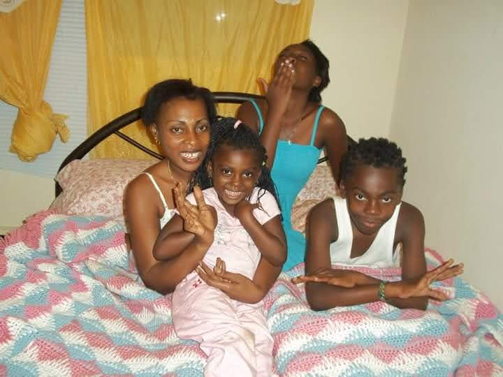
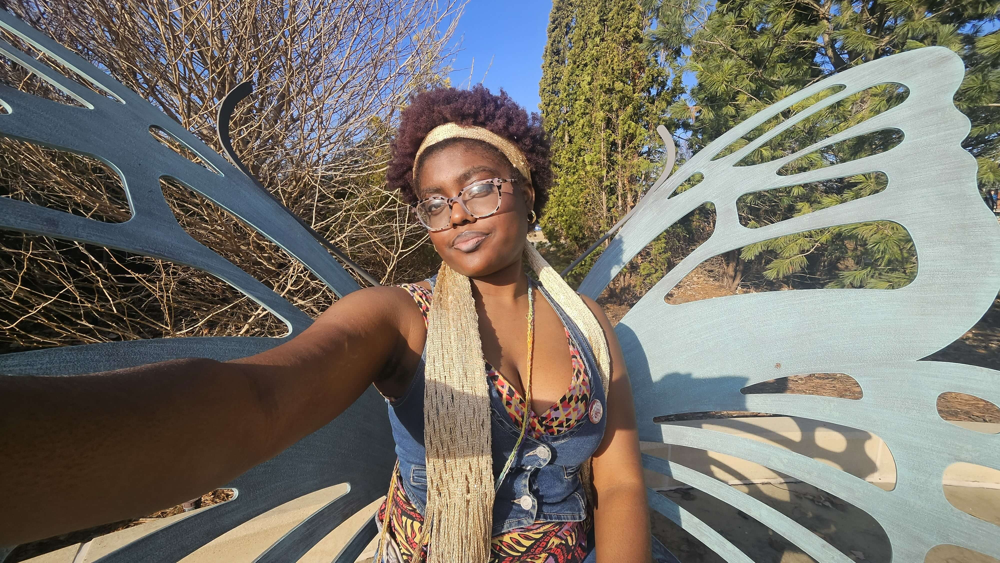
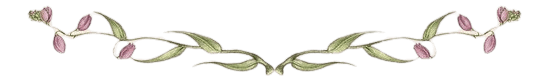
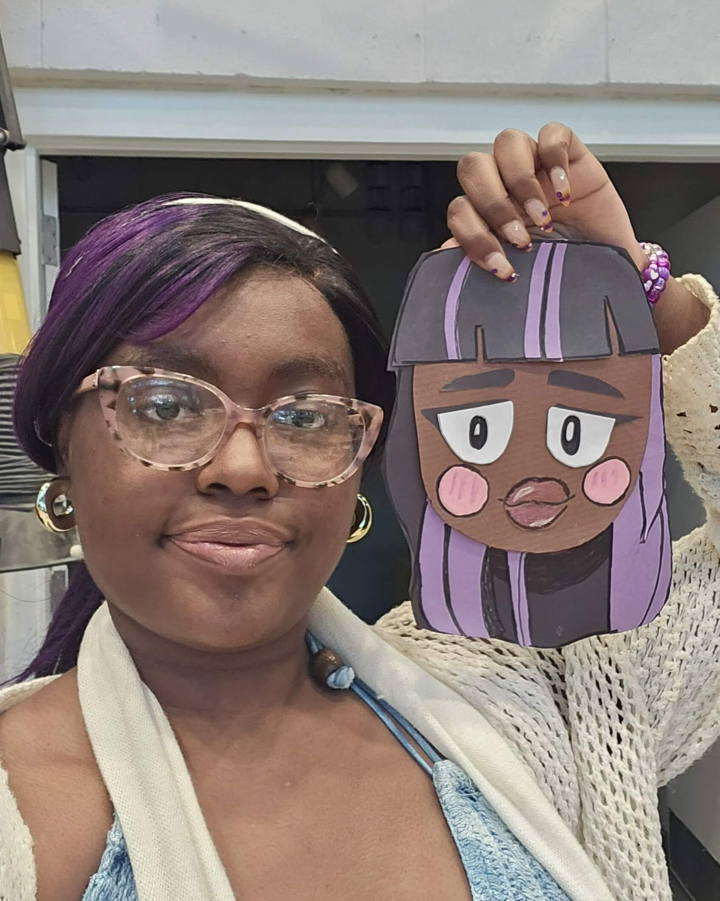
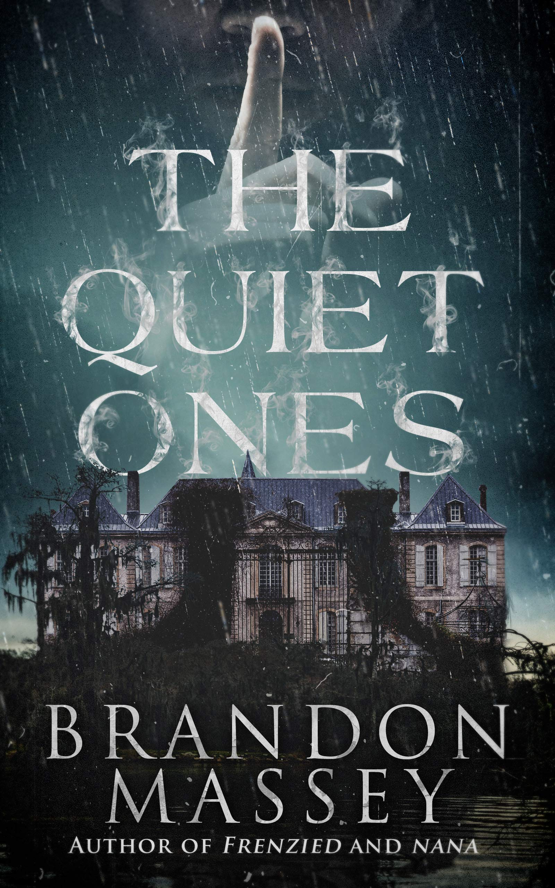

Who is Divine?
I am a Chicago-based student passionate about data, sociology, and community building. Outside of my academic work, I dabble in art and writing; I love exploring different mediums, from ceramics and sculpture to sketches and creative writing.
I come from a family of immigrants from the Democratic Republic of Congo 🇨🇩 ! I've lived in the Chicagoland suburbs most of my life.
When I'm not studying or making art, I enjoy exploring the city, trying new coffee shops, and crafting with friends. Here are a few snapshots of my life!




What I'm up to!
A look at my college journey: Organizing and showing in different ways. On and Off campus.
Being A Part of My Community
There is nothing more valuable than being a part of your community and making a mark. I dedicate my time, on and off campus, to make sure that I am making the best of the opportunities around me while also being a positive force for change. Throughout my college journey, I have been a leader and organizer of so many wonderful initiatives that inspire me to strive for excellence. And overall, they were fun too!

Artist's Corner
Explore my portfolio one piece at a time.

Tardis
Glazed ceramic sculpture, 2024
Media I'm Consuming
A peek into what's currently inspiring me, entertaining me, and keeping me curious.
📽 What I'm Watching
- Star Trek: Voyager
🕮 Reading up
- The Quiet Ones by Brandon Massey
